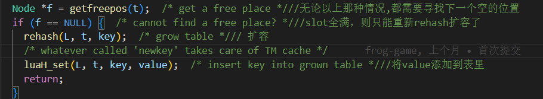

Table的结构
首先上一张示意图
从上图中我们可以了解到Table是由数组和hash混合而成
Table的数组部分的key和hash部分的key都不能为nil
Table的下标是从1开始
数组部分实际按2的指数增长
不同key类型放数组段,还是hash段
- 数字
key一般放数组段 - 没有初始化的
key都为nil,所以哪个段都放不了 - 在重新分配空间大小的时候,只有利用率超过
50%的数组元素进入数组,否则进去hash 0和负数放在hash段
注意在使用长度操作符#对数组其长度时，数组不应该包含nil值，否则很容易出错。
print(#{1,nil}) --1
print(#{1,nil,1}) --3
print(#{1,nil,1,nil}) --1
- 尽量可以提前分配大小,明确知道
table的内容或者知道大小的，可以先预先初始化. 例如- 不建议:
local tb = {}; tb[1] = 1; tb[2] = 2; tb[3] = 3因为这样会多次触发rehash - 建议:
local tb = {nil, nil, nil}或者local tb = {1, 2, 3}后面再作赋值操作
- 不建议:
对应的源码数据结构表如下
哈希表部分
-
hash表中式通过Node结构来组成闭散列的数组 -
用
lsizenode字段来进行hash表的扩容 -
用
1 << lsizenode来求实际的size,比如现在是2^3这样的情况,那么3就是现在lsizenode的大小 -
用
int next字段来把冲突的节点连起来,这样哈希表就会非常的紧凑,只需要一块连续的内存就可以了,如下图一样
源码定义如下
假设lua代码是这样定义的
local t = {}
t["xxx"] = 2222;
那么 上面例子中
-
NodeKey的部分为"xxx" -
lu_byte key_tt是短字符串类型 -
Value key_val是"xxx" -
TValuefields-> tt_是整型 -
TValuefields-> value_是2222 -
TValue i_va里面的tt_为整型 -
TValue i_val里面的value_为2222
TValue i_val指向了NodeKey里面的TValuefields,这么做只是为了方便后面进行读取
hash解决冲突时候的两种方法
闭散列
(即开放地址法):当发生哈希冲突时，如果该哈希表还没有被填满，那么就把该元素放到哈希表的下一个空闲的位置
优点:简单 易懂,当hash表已经没有空格的时候，lua就会resize这个hash表。这样做的好处主要是不用动态申请内存空间，hash表初始化的时候有多少内存空间就用多少，不够就resize这个hash表。
缺点:一旦发生了哈希冲突，所有的冲突连接在一起，很容易产生数据堆积。即不同的数据占用可以利用的位置，就使得寻找其余数据的位置需要进行多次比较，就会导致查找的效率降低。
通过前面的知识点学习,其实可以看出lua中Table的hash部分中用的就是这种闭散列的方式来解决冲突的
开散列

开散列法(哈希桶):又名链地址法，先用哈希函数计算每个数据的散列地址，把具有相同地址的元素归于同一个集合之中，把该集合处理为一个链表，链表的头节点存储于哈希表之中。
优点:解决了数据溢出的问题
缺点:需要增加链接的指针，增加存储开销
通过前面的知识点学习,其实可以看出lua的短字符串中用的就是这种开散列的方式来解决冲突的
找free节点
主要是通过getfreepos来从后往前找第一个free的节点
创建hash表
主要是通过下面的setnodevector函数生成
setnodevector(L, t, 0)会创建空表
hash表利用指向一个虚拟节点dummynode,并将lastfree指向NULL来代表这个Table的hash是个空表，图示如下
2.setnodevector(L, t, 3)会创建一个 size为3, lsizenode为2,hash表的大小为1 <<lsizenode为2^2=4
lsizenode 在setnodevector函数示意图上的1号位置通过luaO_ceillog2函数求出来等于2
hash表的size由2号位置求出也就是1 <<lsizenode为2^2=4 lastfree指向hash表最大size位置(这不是一个合法位置)最后图示如下
hash表的插入
hash表的插入主要通过luaH_newkey 实现,源码如下
从上面源码中我们可以看出将一个key插入哈希表有3中情况
首先通过key计算出主位置,也就是这次通过hashmod我应该放入hash表的那个位置
主位置位空节点的情况
假设初始情况如上图,这个时候要插入个key:1 通过以下2个宏求余也就是求得hash位置值为1%4 = 1
因为为空,这个时候只需要直接把key:1放入hash表就可以了
如果主位置不是空,那么就有两种情况
这个时候就应该当前主位置上面的key是不是其他位置经过hash碰撞放到这里来的,我们通过
计算得到othern位置
比如说上图的key:9 按取余 9%4=1应该是1号位置,而不是现在3号下标位置,所以这个时候othern就是1
如果该othern结点就是主位置结点
假设初始情况是这样
要插入新的节点key:9 通过计算得到下面数据
-
mp:9%4=1表示现在key:9应该放到1号位置 -
othern:因为现在1号位置上放的是key:1所以1%4=1表示othern结点还是主位置结点
所以会执行如下源码
把key:9插入1号位置以后,会和key:1产生冲突,造成如下图所示的情况
做完这步以后在把key:1下标Node里面的next指向key:9的下标位置
,最后把前面找到free位置,设置成key:9如下图所示
如果该othern结点不是主位置结点
比如如图上面的情况
-
首先通过
getfreepos找到了free位置free位置:2号下标位置 -
假如这个时候插入
key:11,计算key:11的mp位置,通过求余11%4得到3号位置,也就是key:9的位置,产生冲突mp:11%4=3 -
计算
key:9的othern位置othern:9%4=1
通过上面的结果判断othern!=mp也就是该othern结点不是主位置结点,所以我们需要如下操作
执行的源码如下
-
顺着
key:9的othern的一路找到mp的前置节点 -
本来前置节点指向的是
mp的位置,现在改为指向新找的空位free -
将
mp存到free -
处理
mp的后继节点 -
将
mp位置腾出来的,原本属于我的位置的value域填入nil值(擦除残留的值)

-
把
key的值复制给mp节点,并返回节点的指针
数组部分
计算出大于且最接近alimit的2的n次方长度
所以数组部分实际按2的指数增长
Table的扩容
当我们在一直插入值到hash表的时候,如果通过getfreepos函数找不到free节点了,那么这个时候我们就需要调用rehash函数进行扩容了

首先我们来看看rehash的源码实现
具体过程如下:
计算数组部分key的数量
-
具体是通过
numusearray函数进行统计的,数组部分实际按2的指数增长，新增部分为一个切片，按照2^(i-1) < k <= 2^i规则进行切片,例如1，2，4，8增长，切片分为1~2,3~4,5~8四片 -
遍历每一个切片,统计每个不为
nil的下标，直到统计次数大于array的长度(2的n次方)，同时记录每一个切片的不为空的数量,并把结果存到nums中,然后把数组部分的数量进行返回
计算hash部分key的数量
具体统计通过numusehash函数,这个函数具体通过两部实现统计
- 统计
hash部分非nil的Key值总数 - 在遍历
hash部分的时候,如果发现key的类型为整型,那么就把这个key值统计到nums中,做数组部分切片统计
根据数组利用率需要达到50%以上才能放到数组部分规则,从新划分数组和hash部分大小
这一部分是通过函数computesizes做到的.通过源码可以看到这里是通过遍历nums的没一个切片,统计下这个切片里面的数量是不是超过了50%,如果超过了,那么就认为可以放到数组部分,反之就应该放hash部分
调用luaH_resize函数进行Table内存分布调整
这部分很简单,主要做的事情就是根据第3步得到的数组大小和hash大小,进行扩容和伸缩,以及重新分配内存
Table的迭代访问
迭代访问是通过luaH_next实现的
- 从源码中可以看到如果
Table里面有很多value的值为nil它并不会停下来直到找到下一个不为nil的元素位置 - 可以看到
luaH_next遍历的顺序是先遍历数组部分,在遍历hash部分 - 从上面的特征可以看出如果一个
Table前面有很多的nil值,而非nil的值在Table的最后几位,就会造成遍历效果非常慢,毕竟他是先先遍历数组部分,在遍历hash部分
#求长度

lua中的#求长度其实就是用luaH_getn求得
取长度操作符写作一元操作 #。 字符串的长度是它的字节数（就是以一个字符一个字节计算的字符串长度）
table的长度被定义成一个整数下标 n 。 它满足 t[n] 不是 nil 而 t[n+1] 为 nil, 此外，如果 t[1] 为 nil ，n 就可能是零。 对于常规的数组，里面从 1 到 n 放着一些非空的值的时候， 它的长度就精确的为 n，即最后一个值的下标。 如果数组有一个空洞（就是说，nil 值被夹在非空值之间）， 那么 #t 可能是指向任何一个是 nil值的前一个位置的下标 (就是说，任何一个nil值都有可能被当成数组的结束)
为了提高查找效率，lua源码并没有进行遍历查找，而是通过二分查找
-
如果
table数组部分的最后一个元素为nil，那么将在数组部分进行二分查找 -
针对
table的数组部分的，但若哈希部分的key为整数且刚好连着数组部分，则也会一并参与计算 -
最后一种情况是数组部分中没有元素 或如果
table数组部分的最后一个元素为nil，那么将在hash部分进行二分查找
所以注意在使用长度操作符#对数组其长度时，数组不应该包含nil值，否则很容易出错,这是个不确定的因素,不要有侥幸,如果一个元素要删除，直接remove，不要用nil去代替
print(#{1,nil}) --1
print(#{1,nil,1}) --3
print(#{1,nil,1,nil}) --1
luaH_get函数流程
luaH_set函数流程
更详细的注释请去我的GitHub地址
以下是我几乎每行都加了注释的GitHub地址
-
ltable.h注释地址 -
ltable.c注释地址